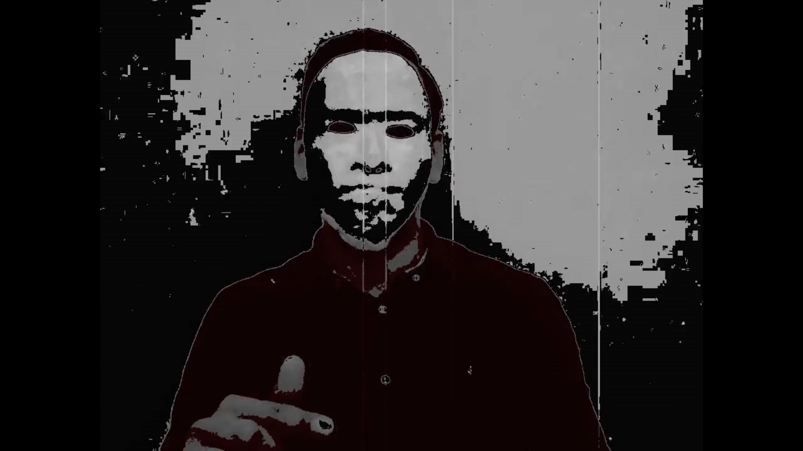
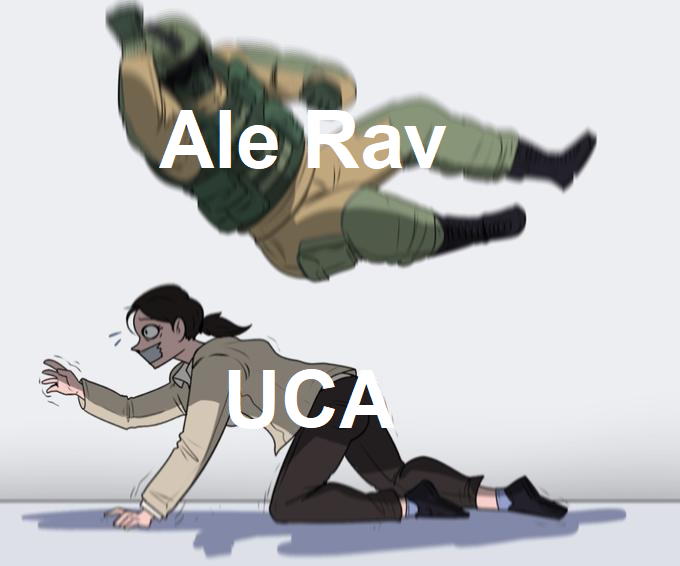
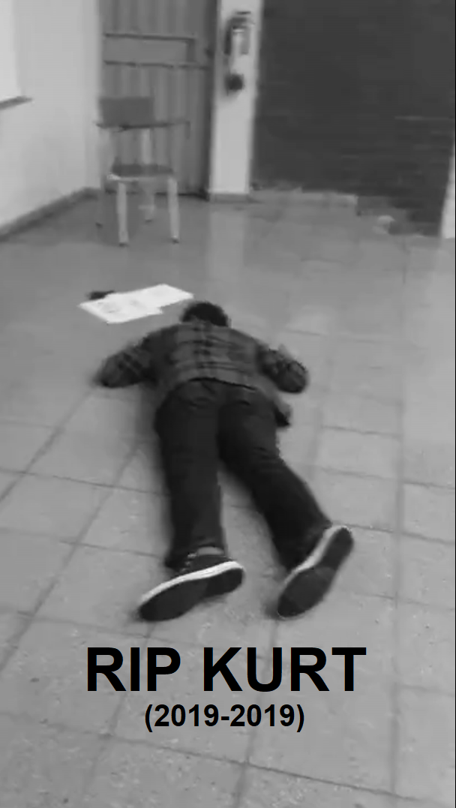

El lunes, durante la clase de programacion web, recibimos un video
de una persona enmascarada que se hacia llamar Ale Rac. Este sujeto.
que nadie tenia idea de quien era, afirmaba que el viernes
destruiria la UCA. Su objetivo? Que se tubiera que recurrir al
articulo en el reglamento que dicta que si la universidad es
cmpletamente destruida por algun desastre, todos los alumnos
inscritos recibiran sus titulos inmediatamente.

Ale Rav, conocido hacker de la deep web, hace su primera
aparicion.
Luego recibimos un audio de un tal Kurt, quien decia saber la
identidad de Ale Rav y necesitaba nuestra ayuda para detenerlo.
Utilizando codigo QR, el nos comunico el siguiente mensaje:Primer mensaje de Kurt
Capítulo 2 - O-O-O
El martes, todo era un caos total. Parecia que no habia salvacion,
Ale Rav habia planeado todo a la perfeccion y nadie podia detenerlo.
Por suerte, algunos alumnos de Admin de Bases lograron resolver el
primer problema, que llevaba a un nuevo codigo localizado en el
polideportivo.

Representacion visual del plan de Ale Rav.
El mensaje era de la complice de Kurt, Ada Jarvis. Ella nos porpuso
un nuevo reto para encontrar a Ale Rav:Mensaje de Ada
Capítulo 3 - minus monocromo
Luego de una breve felicidad por los progresos del martes, el
miecoles hubo mas insertidunmbre. Una vez mas, esta vez durante la
clase de Admin de Bases, hubo un avance. Una nueva pista, con una
nueva proba fue encontrada.Era imperativo actuar rapidamente, pues
Ale Rav estaba cada vez mas cerca de completar su plan.
Simpatizantes de Ale Rav celebran, seguros que ganaran.
El mensaje contenia una nueva de Kurt. Se comunico con nosotros a traves de este mensaje:Segundo mensaje de Kurt
Capítulo 4 - Cumulonimbus
El tiempo corria rapidamente. En menos de 24 horas la UCA estaria destruida. Solo un milagro nos salvaria. En medio de toda la deseperacion, aparecio la esperanza. Un dron desendio de los cielos, comandado por Kurt con un mensaje final.
UCA durante ataque de Ale Rav.
El dron contenia un mensaje. Un reto final para salvar a la universidad:Reto final de Kurt
Capítulo 5 - COMMIT;
¡Lo logramos! Ale Rav habia desaparecido. Al ver a tanta gente contra el, se rindio. O eso pensamos. Kurt nos invito a una reunion para revelarnos la identidad de Ale Rav.

F
Kurt muio, envenenado por Ale Rav como una venganza final por haber detenido su plan. Su sacrificio no sera olvidado.